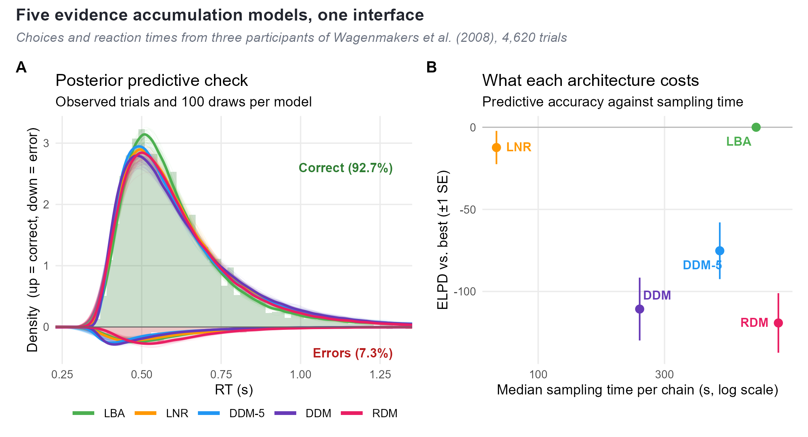
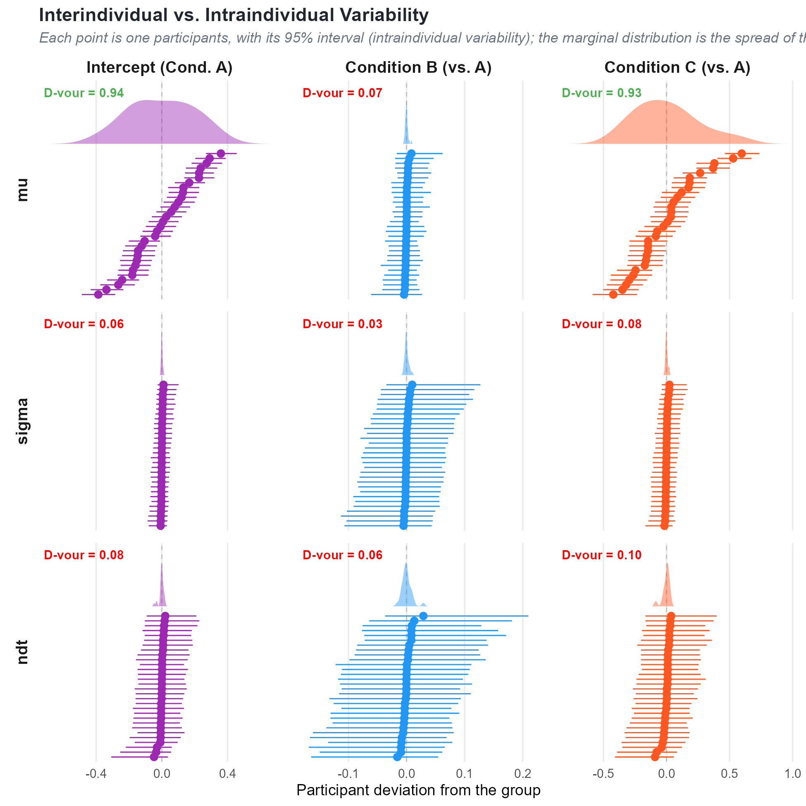
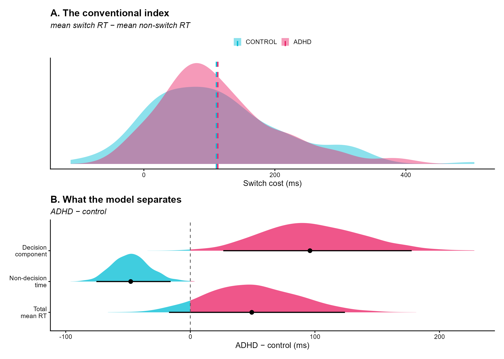
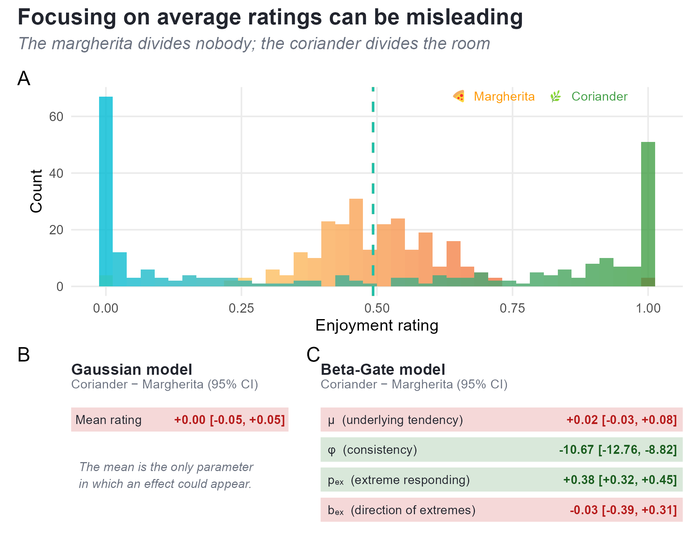

f <- bf(
RT | dec(Error) ~ Condition,
boundary ~ Condition,
bias ~ 1,
ndt ~ 1,
poutlier ~ 1,
sigmadrift = 0, sigmabias = 0, sigmandt = 0,
family = cogmod_ddm()
)
m_ddm <- brm(f, data = df,
prior = cogmod_priors(f, df),
init = cogmod_inits(f, df),
stanvars = cogmod_stanvars(f)) |>
add_criterion("loo")The cogmod R Package: Easy-to-Use Bayesian Cognitive Models for Reaction Times, Choices and Subjective Ratings, with Applications to Computational Neuropsychology
Dominique Makowski
School of Psychology, University of Sussex
Sussex Centre for Consciousness Science, University of Sussex
D.Makowski@sussex.ac.uk
Author Note
Dominique Makowski  https://orcid.org/0000-0001-5375-9967
https://orcid.org/0000-0001-5375-9967
Correspondence concerning this article should be addressed to Dominique Makowski, School of Psychology, University of Sussex, Brighton BN1 9RH, UK, Email: D.Makowski@sussex.ac.uk
Abstract
Cognitive tasks yield far more information than the condition means that dominate published analyses. Descriptive distributional families such as the ex-Gaussian, and process models such as the Drift Diffusion Model, both recover structure that a mean difference discards. Adoption remains limited, and the obstacle is practical: each model family lives in its own package, with its own syntax, its own parameterization and its own output objects. Families are therefore rarely compared, and cognitive modelling sits apart from the regression workflow psychologists already use. We introduce cogmod, an R package implementing a growing collection of such models as brms custom families. Models are specified with ordinary brms formula syntax; any parameter (drift rate, boundary separation, non-decision time, dispersion, precision) can be predicted by covariates and given random effects; and the fitted object is a standard brmsfit, supporting the usual priors, diagnostics, posterior predictive checks, leave-one-out cross-validation and easystats post-processing. Four worked examples use simulated, laboratory and clinical data. Five evidence accumulation architectures are fitted to the same choices and reaction times and compared in a single call. Because every parameter of a distributional model can carry random effects, the reliability of each as an individual-level score then becomes a routine check, and the same decomposition applied to a task-switching dataset recovers a group difference that the conventional executive-control index, and every other summary statistic we computed, entirely misses: ADHD participants are slower in the decision component and faster in the non-decision component, and the two cancel at the level of the mean. A fourth example reaches bounded rating scales through the same interface, separating how highly people rate something from how much they agree with each other. cogmod is openly available at https://github.com/DominiqueMakowski/cogmod.
Keywords: cognitive modelling, Bayesian statistics, reaction times, evidence accumulation, subjective ratings, computational neuropsychology, R
The cogmod R Package: Easy-to-Use Bayesian Cognitive Models for Reaction Times, Choices and Subjective Ratings, with Applications to Computational Neuropsychology
Introduction
Traditional models can be misleading
Consider a dataset containing reaction times (RTs) from 20 participants tested under two experimental conditions (25 trials each). A traditional analysis approach would involve fitting a linear mixed model testing the effect of condition, with participants entered as random intercepts:
lmer(RT ~ Condition + (1 | Participant),
data = cogmod::badlm)Because this analysis yields no significant difference (b = -0.001, t(996) = -0.08, p = .94; Figure 1 B), one could misleadingly interpret and report it as an absence of any difference in the RTs of the two conditions. Yet the two distributions are actually completely different (Figure 1 A): condition A produces a lot of very fast and very slow responses, whereas condition B yields much more consistent RTs. But because the mean of their distribution is similar, the analysis does not capture any other differences. The problem is not the design, the data preprocessing, the random-effect structure or the post-processing, but the model itself: linear regressions estimate means and nothing else. Simply changing the model to use another distribution, such as ex-Gaussian, drastically changes the conclusions that can be drawn from the same data, revealing significant differences in the bulk of the distribution, its spread and its tail (Figure 1 C). Despite the massive benefits we can get from using more appropriate models, they are rarely used in practice, which is what the cogmod package aims to address.
Figure 1
Simulated reaction times from two experimental conditions, available in the cogmod package. (A) Observed distributions; dashed lines mark the condition means. (B, C) The effect of condition as each model reports it, with 95% intervals; green marks an interval excluding zero, red one that does not. The linear mixed model has only a mean to report, and finds no effect in it. The ex-Gaussian splits the same data into a Gaussian bulk (\mu), its spread (\sigma) and an exponential tail (\tau), and finds an effect on all three; because its mean is \mu + \tau, the opposing effects on bulk and tail cancel into exactly the null of panel B.

From means to mechanisms
Cognitive tasks yield complex data, resulting from a sequence of processes that unfold over time. Some responses come almost immediately, some follow a lapse of attention, some reflect an unusually cautious pass over the stimulus, and some are emitted before the evidence has really been weighed. The shape of the distribution, its mode, its spread and its tail, is where the underlying processes leave their trace. Most published analyses reduce all of it to a handful of condition means and test for their difference. That reduction is itself a modelling decision, and a costly one: most of what makes cognitive data distinctive is discarded in the process.
The traditional summary-statistics approach involving t-tests, ANOVAs, linear regressions, treats observations as Normally distributed around a predicted mean (Figure 2). Two alternatives can be distinguished from it. The distributional approach chooses a likelihood that matches the shape of the outcome, such as an ex-Gaussian or shifted LogNormal for reaction times (Balota & Yap, 2011; RTs, Matzke & Wagenmakers, 2009), or an ordered Beta for bounded ratings (Kubinec, 2023), so that skew, boundedness and dispersion are described rather than ignored. The computational approach goes further and derives the likelihood from an account of the process that generated the data. Evidence accumulation models (EAMs, or sequential sampling models) treat response times as the first-passage times of a noisy accumulation towards a decision boundary, and their parameters map onto theoretically distinct components of the decision: the quality of the evidence, how much of it is required before committing, and the time spent encoding the stimulus and executing the response (Brown & Heathcote, 2008; Ratcliff & McKoon, 2008).
Figure 2
The three approaches applied to the same trials: correct responses from three participants in the lexical decision data of Wagenmakers et al. (2008), used again in Example 1. Observed reaction times are on the left; each row then shows what one model is made of and the distribution that follows from it, drawn back over the same data. The 141 ms difference between instruction conditions is first a single number, then a shift plus a shorter tail, then a statement about how evidence was accumulated. The ex-Gaussian and shifted Wald curves both use posterior means from models fitted to these trials in the package’s RT-only Models vignette.

The case for moving past the first approach is well supported. Distributional analyses recover effects that mean comparisons miss and disambiguate effects that mean comparisons conflate (Balota & Yap, 2011; De Boeck & Jeon, 2019). Process models turn an experimental effect into a statement about which component of processing changed, which is what most cognitive-theoretical claims are about (Evans & Wagenmakers, 2020; Ratcliff et al., 2016). Model-based parameters are also more reliable than the difference scores traditionally computed from the same data, making them one of the more promising responses to the “reliability paradox” (Haines et al., 2020; Hedge et al., 2018).
The gap between what a task produces and what is taken from it is widest in neuropsychological assessment, which rests almost entirely on cognitive tasks. The indices extracted from them are total scores, completion times and differences between condition means: quantities inherited for historical rather than theoretical reasons, with no principled mapping onto the constructs they are said to measure (Ratcliff & McKoon, 2022). Older adults, for instance, are reliably slower, but a meta-analysis of diffusion model analyses locates the general age effect on boundary separation and non-decision time, with drift rate differences that are task-dependent and occasionally reversed (Theisen et al., 2021). A latency difference reported as “cognitive slowing” could be more accurately framed as a statement about caution or motor execution. Computational neuropsychology (Steinke & Kopp, 2020) proposes to keep the tasks and replace those scores with parameters that refer to identifiable components of processing, so that a deficit is characterized rather than merely detected.
The same holds for brain-behaviour correlations, a field burdened by weak associations and low reliability. Brain-wide association studies based on basic behavioural indices (such as mean RTs) need thousands of participants before their effects replicate (Marek et al., 2022), and the test-retest reliability of common task-fMRI measures is typically low (Elliott et al., 2020). In contrast, parameters derived from cognitive models are more reliable (Haines et al., 2020; Rouder & Mehrvarz, 2024) and closer to what a neural account is about. The threshold adjustment made under time pressure is a case in point: it is a model parameter rather than an observable, and seems to accurately track striatal and pre-supplementary motor activation, and cortico-striatal connection strength, across individuals (Forstmann et al., 2008, 2016; Wiecki et al., 2015). Whether the target is a clinical score or a brain-behaviour correlation, the root cause is the same: we only get what we fit, and fitting means with linear models is a self-imposed limitation.
The obstacle is practical
Uptake of alternative approaches remains unfortunately modest, and the obstacle is mostly practical. The software landscape for fitting alternative models is fragmented. Diffusion models are fitted in HDDM or HSSM in Python (Fengler et al., 2026; Wiecki et al., 2013), in fast-dm (Voss & Voss, 2007), in DMAT (Vandekerckhove & Tuerlinckx, 2008), or in PyDDM (Shinn et al., 2020); racing accumulator models in DMC and EMC2 in R (Heathcote et al., 2019; Stevenson et al., 2026), or with SequentialSamplingModels.jl in Julia (Fisher & Makowski, 2024); bounded and ordinal responses in yet another set, such as ordbetareg (Kubinec, 2025). Each toolbox has its own syntax for specifying which parameters depend on which conditions, its own parameterizations, defaults, and its own output objects.
As a consequence, comparing families is difficult and therefore rare. Deciding between an ex-Gaussian and a shifted LogNormal, or asking whether a Weibull distribution would do as well as either, means re-fitting in different packages under different conventions, which slows exploratory work and leaves the choice of likelihood to be inherited from disciplinary convention rather than tested against the data at hand. Second, these toolboxes often sit apart from the regression workflow psychologists already use, such as brms in R (Bürkner, 2017), which means missing on the expressive power of that workflow. Every design has to be restated in a toolbox-specific syntax, and features like complex random effects specifications, smooth terms, monotonic effects for ordinal predictors, or post-processing tools, such as marginal effects and means, are effectively out of reach (Bürkner, 2018; Wood, 2017).
cogmod aims to address these limitations by facilitting the application of these models inside a framework researchers already use. Every model is defined as a brms custom family (Bürkner, 2017) specified with ordinary brms formula syntax. Everything a brms user already knows then applies unchanged to a Drift Diffusion Model or an ordered-Beta rating model: distributional regression on every parameter, multilevel structure, priors, convergence diagnostics, posterior predictive checks, leave-one-out cross-validation (Vehtari et al., 2017). The easystats ecosystem (Lüdecke et al., 2019, 2021; Makowski et al., 2019) has been adapted to accommodate these families, providing first-rate post-processing tools.
We describe below the design of the package and the models it provides, then give three worked examples, one per family of models, to illustrate the workflow and applications.
Design and Implementation
Models as brms custom families
brms translates an R formula into Stan code. Its custom family mechanism allows users to supply their own likelihood: a customfamily object declaring the distributional parameters and their link functions, plus a stanvars object injecting the Stan functions that evaluate the log-density. cogmod packages both for each model, and additionally provides the post-processing methods (log_lik_*, posterior_predict_* and posterior_epred_*) that brms requires in order to compute information criteria and generate predictions used in post-processing.
In practice, using a cogmod model requires two arguments beyond a standard brm() call: family and stanvars. Two further helpers, cogmod_priors() and cogmod_inits(), are strictly speaking optional but should be treated as part of the call: they provide adapted chain-initialization values and weakly informative priors on the sensitive parameters to limit convergence issues and other sampling pathologies.
library(cogmod)
library(brms)
# Specify the formula using brms' bf()
f <- bf(
RT ~ Condition +
(Condition | Participant),
sigma ~ Condition +
(Condition | Participant),
ndt ~ Condition +
(Condition | Participant),
family = cogmod_lognormal()
)
# Fit the model
m <- brm(
f,
data = df,
prior = cogmod_priors(f, df),
init = cogmod_inits(f, df),
stanvars = cogmod_stanvars(f),
backend = "cmdstanr"
)Everything else is brms. The formula syntax is the usual one, so any parameter can be predicted by covariates, given random effects, splines, autocorrelation structures or monotonic effects. The fitted object is a plain brmsfit, so summary(), pp_check(), loo(), emmeans, bayesplot and the easystats functions work out of the box. Contrary to many alternative toolboxes, here each distributional parameter is a regression target with its own formula. Testing the effect of a manipulation on various parameters becomes thus trivial, as is giving each participant their own parameters through random effects. This allows the location-scale modelling advocated by Williams et al. (2021), in which the dispersion of a participant’s RTs is a person-specific quantity with its own predictors, to be the default rather than a special case.
Relation to existing software
Figure 3 shows the families available at the time of writing. As adding a new model is a self-contained piece of work, the set is expected to grow to track cutting-edge advances in computational psychology. The package’s documentation website contains the list of available models, with each family’s distributional parameters, link functions and defaults, as well as hands-on tutorials.
Figure 3
Response formats covered by cogmod and the main families available for each at the time of writing; the package website carries the current list. Six further descriptive RT families are also available (cogmod_weibull(), cogmod_logweibull(), cogmod_invweibull(), cogmod_gamma(), cogmod_invgamma() and cogmod_bisa()), and the package’s RT-only Models vignette compares them all on the same data. Every family comes with a _stanvars() function supplying the corresponding Stan code, and with d*() and r*() functions for density evaluation and simulation.

cogmod is not a replacement for the specialized evidence accumulation toolboxes, and the division of labour is worth stating. EMC2 (Stevenson et al., 2026) and HSSM (Fengler et al., 2026) provide sampling algorithms tailored to the geometry of accumulator models, hierarchical structures designed for them and, in HSSM’s case, likelihood approximation networks that make otherwise intractable variants estimable. For a study whose scientific question is the architecture of the decision process, those are the right tools, and they will be faster and more capable at the far end of model complexity.
cogmod targets a different (and arguably more common) situation: a researcher with an experimental dataset, a regression-shaped question and a need for a likelihood that respects the data. For that user the relevant comparison is between a linear model and something better, not between one accumulator toolbox and another. Moving from brm(RT ~ Condition) to a shifted LogNormal or a Wald model means changing two arguments rather than changing software, and at every step the analysis remains a regression, so most of the analyst’s expertise and skills continue to apply.
Example 1: Five Decision Models, One Workflow
To illustrate the typical workflow of fitting evidence accumulation models, we will fit them to the lexical decision task data of Wagenmakers et al. (2008) (Experiment 1), distributed in the rtdists package as speed_acc: participants classified letter strings as words or non-words under instructions emphasising either speed or accuracy. Responses slower than 2 s were excluded. This example uses three participants (n = 4{,}620 trials, 7.3% of errors), pooled without random effects for clarity and simplicity.
In order to fit a basic Drift Diffusion Model (DDM) in cogmod, one needs to specify 1) a formula for each of the parameters, 2) the model family (cogmod_ddm()) and attach the custom family Stan code with cogmod_stanvars(). As it is common in the field, the “decision” being modelled is correct vs. error, which is added to the formula with a dec() term on the response side of the formula. Everything else is the ordinary brms syntax:
The first unnamed parameter, referred to as mu in the Stan code as per brms convention, actually corresponds to the drift rate. The other parameters correspond to boundary separation (boundary), starting point bias (bias), and non-decision time (ndt), respectively. Estimating non-decision time is a common source of difficulty in fitting diffusion models: a shifted distribution assigns zero density to any response faster than ndt, which puts a hard wall in the likelihood at the fastest observed response. In cogmod, every family that carries an ndt therefore mixes in a small contaminant component, of weight poutlier, that keeps early responses at positive density. The wall becomes a finite cost, and ndt is estimated directly in seconds rather than relative to a sample statistic.
The three sigma* arguments fix the between-trial variabilities of the full seven-parameter diffusion model (Ratcliff & McKoon, 2008) at zero, giving the “simple” four-parameter DDM, which is a common simplification, since the variability parameters are expensive to sample and notoriously hard to recover (Boehm et al., 2018). The effect of Condition is also estimated for the boundary separation, which is the textbook hypothesis for a speed-accuracy manipulation, and the results support it: boundary separation drops sharply under speed instructions (95% CI on the linear predictor [-0.65, -0.55]).
Whether that is the right model, however, is a separate question, and answering it means fitting the alternatives, which only involves a few code changes: a different family, its stanvars, and whichever distributional parameters that family owns. The DDM-5 is the model above with between-trial variability in drift rate freed (sigmadrift ~ 1). The LogNormal race (LNR, Rouder et al., 2015), the linear ballistic accumulator (LBA, Brown & Heathcote, 2008) and the racing diffusion model (RDM, Tillman et al., 2020) replace the single diffusion with two accumulators racing towards a threshold, and differ in how each accumulator gets there: by drawing its finishing time from a LogNormal, by accumulating linearly with between-trial variability in its rate, or by diffusing with within-trial noise alone. Because each fit is a brmsfit carrying a loo criterion, comparing the five is one call, and Figure 4 B puts the result of that call against what each architecture cost to sample (the ranking itself is three participants’ worth of evidence; it is an illustration of the workflow, not a result):
loo_compare(m_ddm, m_ddm5, m_lnr,
m_lba, m_rdm)Figure 4
Five evidence accumulation models fitted to the choices and reaction times of three participants. (A) Posterior predictive check: observed trials as histograms, 100 predictive draws per model as faint lines and their pooled density in bold, with correct responses drawn upwards and errors downwards. Both halves are scaled by the proportion of that response, so the area under each curve is its predicted frequency and the check is on the joint distribution of choices and RTs. Draws are taken with with_outliers(), so the check is on the same mixture the likelihood scores. Predicted RTs above 3 s (0.05% of draws, produced by near-zero drift rates in the races) are excluded. (B) Predictive accuracy against sampling cost. Both panels come out of the ordinary brmsfit methods, and neither needed the models to be refitted.

Example 2: Where the Variability Is
Beside decision-making models, cogmod also ships a large collection of RT-only models, spanning the descriptive-to-generative continuum: the ex-Gaussian and the shifted LogNormal that are popular in the RT literature has settled on, the shifted Wald, the single-accumulator LBA and its recinormal (LATER model) special case whose parameters refer to an accumulation process, and a longer tail of families - log-Student, log-Gamma, Birnbaum-Saunders, and several Weibull and Gamma variants. While they can be easily compared with the same workflow as above, the question this example asks instead concerns interindividual variability.
Consider a simple detection task of the kind used throughout attention research and throughout the clinic: a stimulus appears, the participant responds as fast as they can, and the same thing happens 80 times in each of three conditions. Thirty people take part. Nothing about the design is unusual, and neither is the analysis - a shifted LogNormal, with every parameter free to vary by condition and by participant:
f <- bf(
RT ~ Condition +
(Condition | Participant),
sigma ~ Condition +
(Condition | Participant),
ndt ~ Condition +
(Condition | Participant),
family = cogmod_lognormal()
)Read as an experiment, the result is clean and rather boring. Condition B slows responses relative to A on the location parameter (b = 0.10, 95% CI [0.04, 0.17], pd = 99.8\%), and nothing else in the model moves: condition C does not shift the location (-0.02, [-0.15, 0.10], pd = 63\%), and neither condition touches the dispersion (pd = 80\% and 65\%) or the non-decision time (pd = 54\% and 52\%). One effect out of six. A results section writes itself: condition B slows people down, condition C does not, and the manipulation acts on the decision rather than on response variability or motor execution.
Everything in that paragraph is true, and the conclusion most readers would draw from it is wrong. The temptation is to treat the one credible effect as the finding - the quantity the task “measures”, the natural candidate for a score to correlate with a questionnaire, a genotype or a scan. It is in fact the worst of the six for that purpose, and condition C, the null result, is among the best.
The reason is that a fixed effect and an individual difference are answers to different questions, and a design powered for the first says nothing about the second (Haines et al., 2020; Hedge et al., 2018; Rouder & Mehrvarz, 2024). The distinction is decisive wherever the point of a task is to produce a number that characterises a person rather than a population - which is to say throughout neuropsychology and differential research, where tasks are routinely adopted on the strength of a group effect alone. The random-effect SDs already hint at it: 0.01 for the condition B slope against 0.28 for the condition C slope, more than twenty times larger. Condition B slows everyone by about the same amount, which is exactly what makes its group effect so clean and exactly what leaves nothing to tell people apart. Condition C slows some participants dramatically and speeds others up just as dramatically, which averages to nothing and varies enormously. The effect that “worked” is the one on which participants do not differ.
This is the same disconnection that has dogged the translation of group-level neuroimaging findings into individual-level clinical inference (Makowski et al., 2023): a robust average effect licenses a claim about a population, not about the person in front of you, and the two can point in opposite directions.
Participant-level estimates can be extracted with modelbased::estimate_grouplevel(), and their usability as individual scores can be summarised by the Variance-Over-Uncertainty Ratio (D-vour), implemented in performance::performance_dvour() (Lüdecke et al., 2021):
D_{\text{vour}} = \frac{\sigma_{\text{between}}^2}{\sigma_{\text{between}}^2 + \mu_{\text{within}}^2}
where \sigma_{\text{between}}^2 is the observed variability of the participant-level estimates and \mu_{\text{within}}^2 their mean squared uncertainty. It is bounded in [0, 1], and values near 1 mean participants differ far more than we are uncertain about where each of them stands. It is close to an intraclass correlation, but its denominator uses the uncertainty of the point-estimates rather than the raw within-participant variance, so that, unlike an ICC, collecting more trials per participant increases it; and relates to the signal-to-noise ratio advocated by Rouder and Mehrvarz (2024). The two functions compose directly, so the whole check is performance_dvour(estimate_grouplevel(m)).
Figure 5 shows the result for every parameter of the model, and it is worth reading as two quantities rather than one number. Within each panel, how far the points spread along the x axis is the between-participant variability - how much people actually differ. How wide each bar is, is the within-participant uncertainty - how sure we are of any one person’s estimate. D-vour is the first divided by the sum of the two, so a parameter earns a high score by having its points spread further than its bars are wide.
The mu row makes the contrast plain. The intercept (0.94) and condition C (0.93) both have a broad marginal band and points that fan out well past their intervals: these separate people. Condition B, the one credible fixed effect, has a band collapsed to a spike and points stacked on zero inside intervals that dwarf their spread - 0.07. The parameter the experiment found is the parameter that cannot rank anybody.
For comparison, computing each participant’s mean RT difference by hand and running the same index over those difference scores returns 0.58 for condition B, because a raw difference score still carries the trial noise the model has reassigned to the residual. Taken at face value it would have marked condition B as borderline usable; the model says it carries no individual-level information at all.
Figure 5
Individual-level estimates for every parameter of the mixed shifted LogNormal. Each panel is one parameter: points are the 30 participants’ deviations from the group, ordered by estimate, with 95% intervals; the shaded band above is the marginal distribution of those point estimates. A parameter is usable as an individual score when the points spread further than the intervals are wide - which is what D-vour, printed in each panel, measures. Green marks values above 0.5. estimate_grouplevel() labels the mu block “conditional”, since it is the response formula; it is written as mu here to match the family’s parameter names.

Two features generalise beyond the simulation. First, the most reliable individual-level quantity the task produces is the mu intercept (0.94) — how fast each participant is overall, which the experimental design treats as a nuisance to be subtracted away. That is the usual situation, not an artefact of this simulation. Second, because sigma and ndt carry their own predictors and random effects, they get their own reliability verdicts. Here all six are correctly near zero, since every participant was simulated with the same dispersion and the same non-decision time — a useful negative control, and visible in the figure as six panels whose bars are wide and whose bands are needles. Real data often look different: RT variability can discriminate between individuals better than the mean does (Williams et al., 2021), and non-decision time is a natural candidate for a stable person-specific quantity. Had those been the reliable components, the sensible clinical index would have been sigma or ndt, and not a condition contrast at all.
The recommendation is simple, and a multi-parameter framework is what makes it followable: compute a reliability index for every parameter intended for use as an individual-level score, and report it alongside the effect itself.
Example 3: A Clinical Reanalysis
The data so far have been a laboratory experiment and a simulation. The case for computational neuropsychology, though, is a case about clinical data, where trials are few, samples are heterogeneous and the index being reported was fixed decades ago. This example is the same family as Example 2 — a shifted LogNormal with random effects — applied to such a dataset, and it is where the two halves of the argument meet: a group difference that the conventional index cannot see, in parameters whose individual-level usability the previous example showed how to check.
We use the UCLA Consortium for Neuropsychiatric Phenomics dataset (Poldrack et al., 2016), openly available on OpenNeuro as ds000030, and take the task-switching data from the 42 participants diagnosed with ADHD and the 125 healthy controls who completed it. Participants classified a coloured shape by either its colour or its shape, with the relevant dimension cued on each trial and switching on a quarter of them. Keeping correct responses between 200 ms and 2 s leaves 14,543 trials, at most 96 per participant. That is a realistic clinical quantity, and far below what demonstrations of these models usually assume.
What the conventional analysis finds
The standard index for this task is the switch cost, the difference between a participant’s mean RT on switch and non-switch trials, read as a measure of executive control. It finds nothing. Controls average 111 ms and the ADHD group 113 ms, t(82) = -0.13, p = .90. A linear mixed model agrees: a large switch cost overall (b = 0.11 s, t = 13.3, p < .001, so the manipulation worked), no group difference in it (p = .89), and no reliable group difference in overall speed (p = .12).
No other summary statistic rescues the analysis. Across participants the groups do not differ in mean RT (p = .16), RT standard deviation (p = .21), coefficient of variation (p = .96), or the 10th and 90th percentiles of their RT distributions (p = .39 and p = .18). The one index that does differ is the skewness of the RT distribution (p = .02), which is not a quantity anyone reports. On the conventional reading, this task detects no deficit in this sample.
What the model finds
We fitted a shifted LogNormal in which diagnosis and switching predict the location, the dispersion and the non-decision time, with random effects by participant:
f <- bf(
RT ~ Diagnosis * Switching +
(Switching | Participant),
sigma ~ Diagnosis * Switching +
(1 | Participant),
ndt ~ Diagnosis + (1 | Participant),
poutlier ~ 1,
family = cogmod_lognormal()
)The model agrees about the switch cost: the interaction is null on the location (pd = 83\%) and on the dispersion (pd = 59\%). The conventional analysis was right about the question it asked. But diagnosis registers on all three parameters at once, and in opposing directions. On the response scale (Figure 6), the ADHD group’s decision component is 96 ms slower (95% CI [26, 178], pd = 99.7\%), their non-decision time is 48 ms faster ([-75, -16], pd = 99.9\%), and their log-scale dispersion is lower (pd = 96\%). The two effects largely cancel, leaving a total mean difference of 49 ms that still straddles zero ([-17, 124], pd = 92\%) — the null the t-test reported, arrived at from two credible components pointing opposite ways.
Figure 6
The same task-switching data under two analyses (42 ADHD, 125 controls, 14,543 trials). (A) Per-participant switch costs, the conventional executive-control index, which does not separate the groups. (B) The RT distributions the index is computed from. (C) Posterior distributions of the group difference under the shifted LogNormal, on the response scale. The total mean difference straddles zero, but it is the sum of a slower decision component and a faster non-decision component, each credibly non-zero.

This is the cancellation of Figure 1, arriving in real clinical data: two components move in opposite directions, the mean records their sum, and a difference score computed from means is therefore blind to both. No amount of statistical power on the switch cost would have recovered this, because the switch cost is not where the effect is.
Three caveats bound what this shows. The decision and non-decision parameters trade off in the posterior (r = -0.44), the same weak identification that limited the shifted Wald above, so the split between them is less certain than either interval taken alone; what is robust is that a group difference exists in the shape of the distributions and not in their means. The screen of summary statistics reported above is uncorrected, which makes the conventional analysis look, if anything, better than it is. And this is one task in one sample, analysed post hoc: it is a demonstration that the question becomes askable, not a claim about the neuropsychology of ADHD. The substantive point is the one the conventional analysis could not reach — that a task widely read as showing no deficit does distinguish the groups, once the analysis is allowed to say something other than a difference in means.
Examples 2 and 3 are two halves of one clinical argument. A group difference in a parameter, as here, is a statement about a population; using that parameter as a patient’s score requires the check of Example 2, run on the same fit. Both come out of one model, and neither requires the analyst to leave the regression they started from.
Example 4: The Same Interface for Subjective Ratings
Cognitive modelling is usually applied to RTs, but the principles apply to subjective ratings as well, which exhibit particular distribution shapes worth characterizing. Analog (slider) scales are bounded, and responses pile up at the endpoints, because answering “completely agree” is a different kind of act from answering “agree quite a lot”. A mean rating cannot tell the two apart.
Consider a taste test. Participants rate how much they enjoyed each of two dishes on a slider running from “hated it” to “loved it”. One dish is a margherita pizza: nobody has strong feelings about it, and the ratings pile up in the middle. The other is heavy on coriander, which a substantial minority of people experience as tasting of soap - a real and partly heritable split. Half the room loves that dish and half hates it, and almost nobody is indifferent.1
The two dishes have exactly the same mean rating (0.49 in both, Figure 7 A). A t-test duly reports that they are equally liked (t(296) = 0.00, p = 1.00), and a Gaussian regression agrees, putting the difference at 0.00 with a 95% CI of [-0.05, 0.05]. That conclusion is true of the average and false of every individual: one dish is bland, the other is divisive, and the mean cannot tell those apart because it is the one quantity in which they happen to coincide.
cogmod_betagate() is cogmod’s reparameterization of the ordered Beta model (Kubinec, 2023), in which an observed 0 or 1 arises when an underlying continuous tendency passes a lower or upper “gate”. Its four parameters are separately interpretable: mu is that underlying tendency, phi the consistency of the non-extreme responses, pex the overall probability of an extreme response, and bex the direction of the extremity. As in every other family, each takes its own formula:
f <- bf(score ~ Dish,
phi ~ Dish,
pex ~ Dish,
bex ~ Dish,
family = cogmod_betagate())
m <- brm(f, data = df, stanvars = cogmod_stanvars(f))The four parameters separate what the mean confounded (Figure 7 C). Consistency collapses, from 11.2 to 0.5, so the coriander ratings are not merely more variable but anti-clustered: mass at both ends rather than in the middle. Extreme responding rises from 3% to 41% of trials. And the two parameters that should not move do not: the underlying tendency is unchanged (+0.02, [-0.03, 0.08]), correctly, since both dishes are liked equally on average; and so is the direction of the extremes (-0.03, [-0.39, 0.31]), correctly, since the coriander extremes split evenly between “hated it” and “loved it” rather than favouring one end. Two credible effects and two null ones, each answering a different question, from a single model of data a t-test called identical.
Figure 7
The same 500 ratings under two models. (A) Observed ratings for the two dishes; the dashed lines mark the condition means, which coincide. (B, C) The effect of dish as each model reports it, with 95% intervals; green marks an interval excluding zero, red one that does not. The Gaussian model has only a mean to report and finds nothing in it. Beta-Gate separates how highly the dish is rated from how consistently, and from how often raters go to an endpoint - and it correctly reports no change in the first or in which endpoint they choose.

This is the opening example (Figure 1) on a bounded scale, and the moral is the same: a likelihood that owns only a mean can only report a mean. It also generalises past taste tests. Consensus and polarisation are routinely confounded in exactly this way whenever attitudes, symptom severity or confidence are summarised by an average, and the quantity that distinguishes them - how much raters agree with each other - is a parameter here rather than a footnote.
Beta-Gate is one of several ways to give a bounded response its point masses — the zero-one inflated Beta and the extended-support Beta (Kosmidis & Zeileis, 2024) are others, and each attributes the endpoints to a different mechanism. Discrete rating scales are covered too: cogmod_betadiscrete() applies the same logic to Likert-type items, where the response is one of a handful of ordered categories rather than a point on a continuum. Choosing among any of these is the same problem as choosing an RT family, and it is solved the same way — loo_compare() and modelbased::estimate_prediction() behave here exactly as they did for the accumulator models of Example 1, and the package’s Subjective Ratings vignette runs the comparison.
The simulation is not the point; the arrangement is. A response format that ordinarily calls for its own specialised package is here one more family argument, carrying the same formula syntax, the same diagnostics and the same post-processing as the diffusion model in Example 1.
Discussion
cogmod implements Bayesian cognitive models as brms custom families: descriptive RT distributions, evidence accumulation models, and process models for bounded and Likert-type ratings. The design commitment is minimal. The package supplies likelihoods and the post-processing methods to make them work within the brms ecosystem, and inherits the rest.
Throughout the examples, one important point emerges: what you fit is what you get. Choosing a given model is not only a claim about the shape of the data; it fixes the vocabulary in which results can be stated. While a Gaussian model can report that two conditions’ mean differ by 141 ms, an ex-Gaussian can attribute that difference to the bulk or to the tail, but a diffusion model will provide answers in terms of evidence, threshold or encoding. The same holds off the RT scale: Beta-Gate separates how highly a participant rates something from how readily they answer at the ends of the scale, and Example 4 is a case where those two are the whole difference between conditions the mean calls identical.
This point is particularly relevant for neuropsychological assessments. A neuropsychological test is a cognitive task, so everything above applies to it directly, with higher stakes attached. The quantity a clinician reports — a completion time, a total score, an interference effect — is exactly the aggregate that the opening example shows to be several things at once, and a patient’s deviation from a normative sample is therefore a deviation on an index corresponding to no single mechanism. Model parameters turn “impaired on the Stroop” into a claim about which component is impaired, and two patients with the same score but opposite parameter profiles stop being indistinguishable (Ratcliff & McKoon, 2022; Steinke & Kopp, 2020). Ageing shows what this changes in practice (Theisen et al., 2021), and the clinical reanalysis of Example 3 shows the sharper version of the same point: a conventional index can report no group difference at all while two components underneath it differ substantially, because the index is their sum. The logic covers any group whose deficit could be caution, encoding, motor execution or evidence quality.
The reliability check that precedes it supplies the rest of the argument. A parameter is usable as a clinical score only if it separates people by more than it is uncertain about each of them, and this framework makes that checkable for every parameter rather than assumed for whichever one the test happens to report. It also makes visible that the best individual-level quantity a task yields is often not a condition contrast, but a person’s overall speed, dispersion or non-decision time — quantities the experimental tradition subtracts away as nuisance and a clinical tradition has no reason to.
The same reparameterization helps on the neural side. Correlating brain measures with mean RT or accuracy asks the brain to explain a quantity that mixes mechanisms; correlating them with drift rate, threshold or non-decision time asks it to explain one at a time, which is why parameters have proven the more tractable targets in model-based cognitive neuroscience (Forstmann et al., 2016; Wiecki et al., 2015). cogmod does not replace the joint approaches that estimate behavioural and neural parameters together, but it lowers the cost of the two-stage version. Clinical datasets arrive with covariates (age, education, group, medication) and unbalanced trial counts; here both are handled by the formula syntax used for everything else, and participant-level estimates come out of estimate_grouplevel() ready to be correlated with imaging or clinical measures. The obstacle to a computational neuropsychology was never the argument, which has been on record for two decades. It was that the modelling stayed expensive enough to remain a research activity rather than an analysis step.
Limitations
Computational cost. General-purpose HMC on custom Stan code is slower than a sampler built for a specific model class. Figure 4 B makes this concrete: the LBA took roughly eleven minutes per chain on four thousand trials without random effects, and hierarchical versions cost substantially more. Users whose primary question concerns the fine structure of the decision process, or who must fit many participants with complex accumulator architectures, are better served by EMC2 (Stevenson et al., 2026) or HSSM (Fengler et al., 2026).
Identifiability. The flexibility of the interface makes it easy to write down models the data cannot support. Regressing every parameter of an LBA on every condition is one line of code and usually a bad idea: evidence accumulation parameters trade off against each other, and between-trial variability parameters are notoriously poorly identified (Boehm et al., 2018; Evans & Wagenmakers, 2020). The package does not, and cannot, prevent this. Prior predictive checks, parameter recovery on simulated data and the standard Bayesian workflow (Gelman et al., 2020) remain the user’s responsibility; the d*() and r*() functions provided for every family - and the p*() cumulative distribution functions available for the diffusion, racing diffusion and Wald families - exist to make those checks cheap.
Maturity. The package is under active development, and the set of families reported here is a snapshot rather than a specification. Parameterizations may still change, and have: ndt was until recently a fraction of a user-supplied minimum RT rather than a quantity in seconds, and the ex-Gaussian’s mu was constrained positive. The package website and NEWS.md track the current state, and record what to change in existing code. Several descriptive RT families have little precedent in this literature, and while the package’s own comparisons suggest they deserve attention, their behaviour is correspondingly less well documented than the ex-Gaussian’s or the shifted LogNormal’s.
Scope. cogmod currently covers single-stage decisions and rating responses. Reinforcement learning models, sequential-sampling models with more than two accumulators, collapsing boundaries and joint modelling of behaviour with neural measures are not yet available; some are planned, and some are poorly suited to the custom-family mechanism and may never be.
Analytically tractable likelihoods only. That last point is the sharpest boundary on what cogmod can become, and it follows directly from the design. A brms custom family is a Stan model, so every family shipped here needs a likelihood that can be written down in closed form and evaluated cheaply enough for HMC. Several of the models a user might reasonably want next do not have one: the leaky competing accumulator (Usher & McClelland, 2001), diffusion processes with collapsing boundaries or time-varying drift (Hawkins et al., 2015), and richer racing architectures are defined by a generative simulation rather than by a density, and where a density does exist it often requires numerical integration, which gradient-based sampling tolerates poorly. The general remedy is to stop requiring the likelihood. Simulation-based inference (Cranmer et al., 2020) trains a neural network on data simulated from the model, either to approximate the likelihood — the route taken by the likelihood approximation networks that make otherwise intractable variants estimable in HSSM (Fengler et al., 2021, 2026) — or to amortize the posterior directly, as in BayesFlow (Radev et al., 2020, 2023). That literature is moving quickly and cogmod follows it closely; whether such approximations can be exposed behind the same formula interface, so that a simulation-defined model is specified, sampled and post-processed like any other family, is an open question and the direction in which we hope to extend the package.
Conclusion
The gap between what cognitive data contain and what is extracted from them is large, and it is maintained by friction rather than by disagreement. Few researchers would defend a mean difference as an adequate summary of a reaction time distribution, yet many report one, because the alternative has meant learning a new toolchain for every model worth trying. By implementing cognitive models as families within a regression framework psychologists already use, cogmod aims to make the better analysis the easier one; by putting descriptive and generative models under one interface, it aims to make the choice between them an empirical question rather than an inherited convention.
Open Practices Statement
cogmod is open source and available at https://github.com/DominiqueMakowski/cogmod, with documentation at https://dominiquemakowski.github.io/cogmod/.
References
Balota, D. A., & Yap, M. J. (2011). Moving beyond the mean in studies of mental chronometry: The power of response time distributional analyses. Current Directions in Psychological Science, 20(3), 160–166. https://doi.org/10.1177/0963721411408885
Boehm, U., Annis, J., Frank, M. J., Hawkins, G. E., Heathcote, A., Kellen, D., Krypotos, A.-M., Lerche, V., Logan, G. D., Palmeri, T. J., et al. (2018). Estimating across-trial variability parameters of the diffusion decision model: Expert advice and recommendations. Journal of Mathematical Psychology, 87, 46–75. https://doi.org/10.1016/j.jmp.2018.09.004
Brown, S. D., & Heathcote, A. (2008). The simplest complete model of choice response time: Linear ballistic accumulation. Cognitive Psychology, 57(3), 153–178. https://doi.org/10.1016/j.cogpsych.2007.12.002
Bürkner, P.-C. (2017). brms: An R package for Bayesian multilevel models using Stan. Journal of Statistical Software, 80(1), 1–28. https://doi.org/10.18637/jss.v080.i01
Bürkner, P.-C. (2018). Advanced Bayesian multilevel modeling with the R package brms. The R Journal, 10(1), 395–411. https://doi.org/10.32614/RJ-2018-017
Cranmer, K., Brehmer, J., & Louppe, G. (2020). The frontier of simulation-based inference. Proceedings of the National Academy of Sciences, 117(48), 30055–30062. https://doi.org/10.1073/pnas.1912789117
De Boeck, P., & Jeon, M. (2019). An overview of models for response times and processes in cognitive tests. Frontiers in Psychology, 10, 102. https://doi.org/10.3389/fpsyg.2019.00102
Elliott, M. L., Knodt, A. R., Ireland, D., Morris, M. L., Poulton, R., Ramrakha, S., Sison, M. L., Moffitt, T. E., Caspi, A., & Hariri, A. R. (2020). What is the test-retest reliability of common task-functional MRI measures? New empirical evidence and a meta-analysis. Psychological Science, 31(7), 792–806. https://doi.org/10.1177/0956797620916786
Evans, N. J., & Wagenmakers, E.-J. (2020). Evidence accumulation models: Current limitations and future directions. The Quantitative Methods for Psychology, 16(2), 73–90. https://doi.org/10.20982/tqmp.16.2.p073
Fengler, A., Govindarajan, L. N., Chen, T., & Frank, M. J. (2021). Likelihood approximation networks (LANs) for fast inference of simulation models in cognitive neuroscience. eLife, 10, e65074. https://doi.org/10.7554/eLife.65074
Fengler, A., Xu, P., Bera, K., Paniagua, C., Omar, A., & Frank, M. J. (2026). HSSM: A widely applicable toolbox for hierarchical Bayesian neurocognitive modeling. bioRxiv. https://doi.org/10.1101/2026.06.05.730398
Fisher, C. R., & Makowski, D. (2024). SequentialSamplingModels.jl: A julia package for simulating and evaluating sequential sampling models. Proceedings of the JuliaCon Conferences. https://doi.org/10.21105/jcon.00186
Forstmann, B. U., Dutilh, G., Brown, S., Neumann, J., von Cramon, D. Y., Ridderinkhof, K. R., & Wagenmakers, E.-J. (2008). Striatum and pre-SMA facilitate decision-making under time pressure. Proceedings of the National Academy of Sciences, 105(45), 17538–17542. https://doi.org/10.1073/pnas.0805903105
Forstmann, B. U., Ratcliff, R., & Wagenmakers, E.-J. (2016). Sequential sampling models in cognitive neuroscience: Advantages, applications, and extensions. Annual Review of Psychology, 67, 641–666. https://doi.org/10.1146/annurev-psych-122414-033645
Gelman, A., Vehtari, A., Simpson, D., Margossian, C. C., Carpenter, B., Yao, Y., Kennedy, L., Gabry, J., Bürkner, P.-C., & Modrák, M. (2020). Bayesian workflow. arXiv Preprint, arXiv:2011.01808. https://doi.org/10.48550/arXiv.2011.01808
Haines, N., Kvam, P. D., Irving, L. H., Smith, C., Beauchaine, T. P., Pitt, M. A., Ahn, W.-Y., & Turner, B. M. (2020). Theoretically informed generative models can advance the psychological and brain sciences: Lessons from the reliability paradox. PsyArXiv. https://doi.org/10.31234/osf.io/xr7y3
Hawkins, G. E., Forstmann, B. U., Wagenmakers, E.-J., Ratcliff, R., & Brown, S. D. (2015). Revisiting the evidence for collapsing boundaries and urgency signals in perceptual decision-making. Journal of Neuroscience, 35(6), 2476–2484. https://doi.org/10.1523/JNEUROSCI.2410-14.2015
Heathcote, A., Lin, Y.-S., Reynolds, A., Strickland, L., Gretton, M., & Matzke, D. (2019). Dynamic models of choice. Behavior Research Methods, 51(2), 961–985. https://doi.org/10.3758/s13428-018-1067-y
Hedge, C., Powell, G., & Sumner, P. (2018). The reliability paradox: Why robust cognitive tasks do not produce reliable individual differences. Behavior Research Methods, 50(3), 1166–1186. https://doi.org/10.3758/s13428-017-0935-1
Kosmidis, I., & Zeileis, A. (2024). Extended-support beta regression for [0, 1] responses. arXiv Preprint, arXiv:2409.07233. https://doi.org/10.48550/arXiv.2409.07233
Kubinec, R. (2023). Ordered beta regression: A parsimonious, well-fitting model for continuous data with lower and upper bounds. Political Analysis, 31(4), 519–536. https://doi.org/10.1017/pan.2022.20
Kubinec, R. (2025). Ordbetareg: Ordered beta regression models with ’brms’. https://doi.org/10.32614/CRAN.package.ordbetareg
Lüdecke, D., Ben-Shachar, M. S., Patil, I., Waggoner, P., & Makowski, D. (2021). performance: An R package for assessment, comparison and testing of statistical models. Journal of Open Source Software, 6(60), 3139. https://doi.org/10.21105/joss.03139
Lüdecke, D., Waggoner, P., & Makowski, D. (2019). insight: A unified interface to access information from model objects in R. Journal of Open Source Software, 4(38), 1412. https://doi.org/10.21105/joss.01412
Makowski, D., Ben-Shachar, M. S., & Lüdecke, D. (2019). bayestestR: Describing effects and their uncertainty, existence and significance within the Bayesian framework. Journal of Open Source Software, 4(40), 1541. https://doi.org/10.21105/joss.01541
Makowski, D., Chen, S.-H. A., Larsen, R. R., Boyle, G. J., & Lilienfeld, S. O. (2023). Clinical neuropsychology in the era of neuroimaging. In The SAGE Handbook of Clinical Neuropsychology: Clinical Neuropsychological Disorders (p. 41). SAGE.
Marek, S., Tervo-Clemmens, B., Calabro, F. J., Montez, D. F., Kay, B. P., Hatoum, A. S., Donohue, M. R., Foran, W., Miller, R. L., Hendrickson, T. J., et al. (2022). Reproducible brain-wide association studies require thousands of individuals. Nature, 603(7902), 654–660. https://doi.org/10.1038/s41586-022-04492-9
Matzke, D., & Wagenmakers, E.-J. (2009). Psychological interpretation of the ex-Gaussian and shifted Wald parameters: A diffusion model analysis. Psychonomic Bulletin & Review, 16(5), 798–817. https://doi.org/10.3758/PBR.16.5.798
Poldrack, R. A., Congdon, E., Triplett, W., Gorgolewski, K. J., Karlsgodt, K. H., Mumford, J. A., Sabb, F. W., Freimer, N. B., London, E. D., Cannon, T. D., & Bilder, R. M. (2016). A phenome-wide examination of neural and cognitive function. Scientific Data, 3, 160110. https://doi.org/10.1038/sdata.2016.110
Radev, S. T., Mertens, U. K., Voss, A., Ardizzone, L., & Köthe, U. (2020). BayesFlow: Learning complex stochastic models with invertible neural networks. IEEE Transactions on Neural Networks and Learning Systems, 33(4), 1452–1466. https://doi.org/10.1109/TNNLS.2020.3042395
Radev, S. T., Schmitt, M., Schumacher, L., Elsemüller, L., Pratz, V., Schälte, Y., Köthe, U., & Bürkner, P.-C. (2023). BayesFlow: Amortized Bayesian workflows with neural networks. Journal of Open Source Software, 8(89), 5702. https://doi.org/10.21105/joss.05702
Ratcliff, R., & McKoon, G. (2008). The diffusion decision model: Theory and data for two-choice decision tasks. Neural Computation, 20(4), 873–922. https://doi.org/10.1162/neco.2008.12-06-420
Ratcliff, R., & McKoon, G. (2022). Can neuropsychological testing be improved with model-based approaches? Trends in Cognitive Sciences, 26(11), 899–901. https://doi.org/10.1016/j.tics.2022.08.015
Ratcliff, R., Smith, P. L., Brown, S. D., & McKoon, G. (2016). Diffusion decision model: Current issues and history. Trends in Cognitive Sciences, 20(4), 260–281. https://doi.org/10.1016/j.tics.2016.01.007
Rouder, J. N., & Mehrvarz, M. (2024). A psychometrics of individual differences in experimental tasks. Current Directions in Psychological Science. https://doi.org/10.1177/09637214231220923
Rouder, J. N., Province, J. M., Morey, R. D., Gomez, P., & Heathcote, A. (2015). The lognormal race: A cognitive-process model of choice and latency with desirable psychometric properties. Psychometrika, 80(2), 491–513. https://doi.org/10.1007/s11336-013-9396-3
Shinn, M., Lam, N. H., & Murray, J. D. (2020). A flexible framework for simulating and fitting generalized drift-diffusion models. eLife, 9, e56938. https://doi.org/10.7554/eLife.56938
Steinke, A., & Kopp, B. (2020). Toward a computational neuropsychology of cognitive flexibility. Brain Sciences, 10(12), 1000. https://doi.org/10.3390/brainsci10121000
Stevenson, N., Donzallaz, M. C., Innes, R. J., Forstmann, B. U., Matzke, D., & Heathcote, A. (2026). Bayesian hierarchical cognitive modeling with the EMC2 package. Behavior Research Methods. https://doi.org/10.3758/s13428-025-02869-y
Theisen, M., Lerche, V., von Krause, M., & Voss, A. (2021). Age differences in diffusion model parameters: A meta-analysis. Psychological Research, 85(5), 2012–2021. https://doi.org/10.1007/s00426-020-01371-8
Tillman, G., Van Zandt, T., & Logan, G. D. (2020). Sequential sampling models without random between-trial variability: The racing diffusion model of speeded decision making. Psychonomic Bulletin & Review, 27(5), 911–936. https://doi.org/10.3758/s13423-020-01738-8
Usher, M., & McClelland, J. L. (2001). The time course of perceptual choice: The leaky, competing accumulator model. Psychological Review, 108(3), 550–592. https://doi.org/10.1037/0033-295X.108.3.550
Vandekerckhove, J., & Tuerlinckx, F. (2008). Diffusion model analysis with MATLAB: A DMAT primer. Behavior Research Methods, 40(1), 61–72. https://doi.org/10.3758/BRM.40.1.61
Vehtari, A., Gelman, A., & Gabry, J. (2017). Practical Bayesian model evaluation using leave-one-out cross-validation and WAIC. Statistics and Computing, 27(5), 1413–1432. https://doi.org/10.1007/s11222-016-9696-4
Voss, A., & Voss, J. (2007). Fast-dm: A free program for efficient diffusion model analysis. Behavior Research Methods, 39(4), 767–775. https://doi.org/10.3758/BF03192967
Wagenmakers, E.-J., Ratcliff, R., Gomez, P., & McKoon, G. (2008). A diffusion model account of criterion shifts in the lexical decision task. Journal of Memory and Language, 58(1), 140–159. https://doi.org/10.1016/j.jml.2007.04.006
Wiecki, T. V., Poland, J., & Frank, M. J. (2015). Model-based cognitive neuroscience approaches to computational psychiatry: Clustering and classification. Clinical Psychological Science, 3(3), 378–399. https://doi.org/10.1177/2167702614565359
Wiecki, T. V., Sofer, I., & Frank, M. J. (2013). HDDM: Hierarchical Bayesian estimation of the drift-diffusion model in Python. Frontiers in Neuroinformatics, 7, 14. https://doi.org/10.3389/fninf.2013.00014
Williams, D. R., Mulder, J., Rouder, J. N., & Rast, P. (2021). Beneath the surface: Unearthing within-person variability and mean relations with Bayesian mixed models. Psychological Methods, 26(1), 74–95. https://doi.org/10.1037/met0000270
Wood, S. N. (2017). Generalized additive models: An introduction with R (2nd ed.). Chapman; Hall/CRC. https://doi.org/10.1201/9781315370279
Footnotes
Data from the first author were not included, as they would have biased the margherita mean towards extreme enjoyment.↩︎